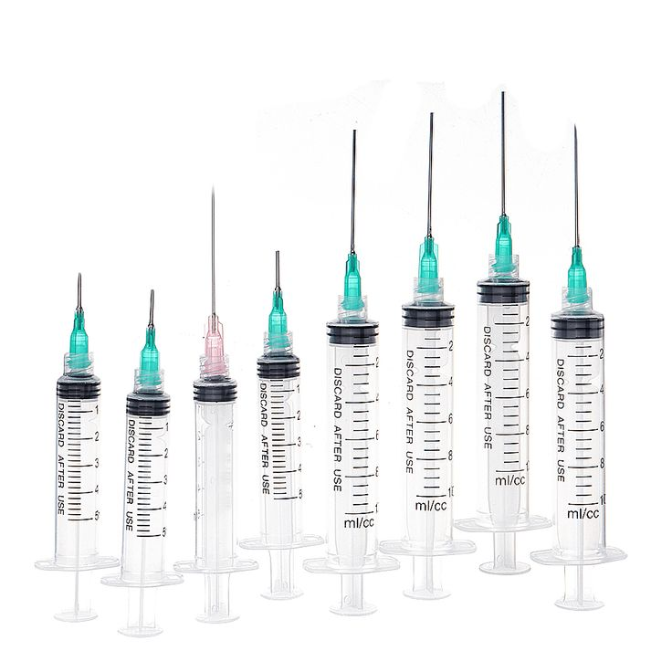
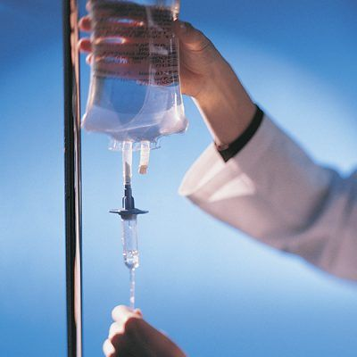

💉 Les Instruments pour l'Administration de Médicaments

1.1. Les Seringues et Aiguilles
Les seringues et les aiguilles sont des instruments de base pour l'infirmier. Elles sont utilisées principalement pour administrer des médicaments sous forme liquide directement dans le corps, que ce soit par voie intraveineuse, intramusculaire ou sous-cutanée. Chaque type d'injection nécessite une seringue et une aiguille spécifiques adaptées à la dose et à la méthode d'administration.
- Seringues : disponibles en différentes tailles (1ml, 5ml, 10ml, etc.), les seringues permettent de mesurer et administrer des doses précises de médicaments.
- Aiguilles : de tailles et calibres variés, les aiguilles sont choisies en fonction du type d'injection (plus courtes pour les injections sous-cutanées, plus longues pour les injections intramusculaires).

1.2. Les Perfusions Intraveineuses (IV)
Les perfusions intraveineuses (IV) permettent d’administrer des fluides, des médicaments ou des nutriments directement dans la circulation sanguine. Elles sont essentielles pour les soins en cas de déshydratation, de maladies chroniques, ou lors de chirurgies.
- Cathéter IV : petit tube inséré dans une veine pour permettre l’administration continue ou intermittente de médicaments ou de liquides.
- Pompes à perfusion : dispositifs électroniques permettant de contrôler précisément le débit des fluides administrés sur une période donnée.